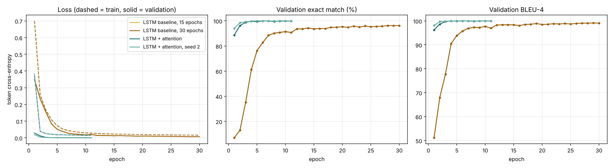
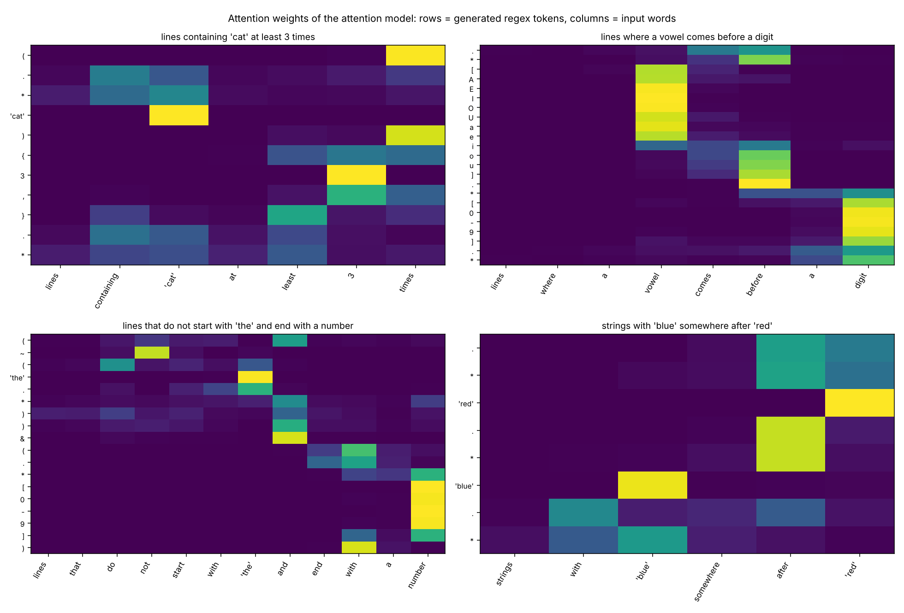

NLP course project · Encoder-decoder text generation
An encoder-decoder with attention, built from scratch and trained on a verified dataset
English
lines containing ‘cat’ at least 2 times
Regular expression
(.*cat){2,}.*
Mohamed Ali Aoun
The task
lines where ‘red’ comes before ‘blue’
.*red.*blue.*
lines that start with a capital letter and end with a number
([A-Z].*)&(.*[0-9])
lines that contain ‘error’ and do not contain ‘warning’
(.*error.*)&(~(.*warning.*))
A sequence-to-sequence problem: one token sequence in, another out. The regex has to match whole lines, & means and, ~ means not, and the model has no pretrained weights.
2 · The task
Why a new dataset
NL-RX description
lines with the string ‘dog’ at least 2 times
NL-RX label
.*(dog){2,}.*
dogdog
accepted: two copies side by side
dog and dog
rejected, although it contains ‘dog’ twice
The model learned this label faithfully, so a correct output looked wrong to a human reader. The templated version of the dataset (NL-RX-Synth) has the same convention. Our first model scored 45.3% exact match on this data.
3 · Why a new dataset
VeriRegex: our verified dataset
1. Meaning tree
atleast(‘cat’, 2)
2a. English, many phrasings
lines where ‘cat’ appears at least twice
2b. Regex
(.*cat){2,}.*
2c. Python predicate
s.count('cat') >= 2
3. Check on about 300 probe strings
Regex and predicate must agree on every string, and some lines must match and some must not.
0
disagreements: one would stop the build
5,251
contradictions or tautologies thrown away
4 · VeriRegex
Dataset
13
kinds of condition, combined with not, and, or
216
phrasing templates, plus synonyms, subjects and openers
135
literal words, numbers and phrases in quotes
| Split | Pairs | What it tests |
|---|---|---|
| Train | 37,586 | 14,345 distinct regex structures |
| Validation | 2,000 | model selection, regexes unseen in training |
| Test: new regexes | 1,884 | new combinations and parameters, never in training |
| Test: new phrasings | 1,500 | 11 sentence patterns held out of training, new regexes |
| Test: handwritten | 50 | descriptions written by hand in free wording |
The split is by regex: no regex structure appears in both training and a test set (except 46 of the 50 handwritten ones, which test wording, not structure).
5 · Dataset
Preprocessing
Description
lines where ‘red’ comes before ‘blue’
Model input
lines where __w0__ comes before __w1__
Model output
.*__w0__.*__w1__.*
Final regex
.*red.*blue.*
lowercase, word tokens, 198-word vocabulary from training only, <PAD> and <UNK>
one token per regex character, slots as single tokens, 44 tokens, <SOS> and <EOS>
6 · Preprocessing
Architecture
Encoder
Input words
tokens of the description
Embedding
198 × 128
LSTM
1 layer, 256 units
Final state
hidden and cell
Bridge: a linear layer and tanh turn the final state into the decoder’s start state
Decoder
Previous regex token
Embedding
44 × 128
LSTM
256 units
Linear + softmax
44 tokens
Next regex token
stops at <EOS>
Baseline: the decoder only sees the final state. Parameters: 964,396 for the baseline, 1,375,020 with attention.
7 · Architecture
The improvement: attention
1
How relevant is each input word to the next output token?
score = v^T tanh(W_s s + W_h h_i)
2
Softmax over the input positions. Padding gets zero weight.
3
Weighted sum of the encoder states, fed to the LSTM and to the output layer.
Without attention, 256 numbers must carry the whole description, and every regex token depends on that single summary.
88.7% vs 7.1%
validation exact match after one epoch, with and without attention
8 · Attention
Training setup
| Setting | Value |
|---|---|
| Embedding size | 128 |
| Hidden size | 256 |
| Layers | 1 LSTM layer |
| Dropout | 0.3, plus 5% word dropout |
| Parameters | 964k, 1.38M with attention |
| Setting | Value |
|---|---|
| Loss | Token cross-entropy, padding ignored |
| Optimiser | Adam, learning rate 0.001 |
| Schedule | Halved after 2 epochs without gain |
| Batch size | 64 |
| Epochs | Up to 15 (30 for one baseline), early stop |
| Teacher forcing | Ratio 1.0 |
| Stopping | Best validation exact match |
9 · Training
Evaluation
The generated string is identical to the reference. Strict: equivalent regexes written differently count as wrong.
Same behaviour: same accept and reject decisions as the reference on about 600 probe strings, using our own matcher for the & and ~ operators.
N-gram overlap on regex tokens. Smooth, so it rewards near misses.
Teacher-forced diagnostics that compare models independently of decoding.
Three test sets: new regexes in the training style, 11 held-out phrasing patterns, and 50 handwritten descriptions. The last two measure what a template-trained model cannot simply memorise.
10 · Evaluation
Results, greedy decoding
| Exact match (%) | n | Baseline, 15 epochs | Baseline, 30 epochs | Attention, 15 max |
|---|---|---|---|---|
| New regexes | 1,884 | 92.4 | 95.6 | 99.4 |
| New phrasings | 1,500 | 75.1 | 81.2 | 82.6 |
| Handwritten | 50 | 94.0 | 92.0 | 96.0 |
Second attention seed
99.7 / 83.3 / 96.0
Valid regexes
99.6 to 100% everywhere
First version, NL-RX
45.3% exact, same model
Exact = identical to the reference. Behaviour-based scores are 0 to 2 points higher (report, section 7). No test regex of the first two sets appears in training.
11 · Results
What we learned
6 of 7
baseline errors on new regexes removed by attention, against a baseline trained twice as long (4.4% wrong down to 0.6%)
92.5%
30-epoch baseline on AND combinations, against 99.4% with attention: one vector struggles to carry two or three conditions
1 vs 7
epochs to reach 88% validation exact match, with and without attention
-16.8
points of exact match for the attention model on held-out phrasings (99.4 to 82.6)
+1.4
points only over the long baseline on held-out phrasings: there the wording, not the architecture, is the limit
12 · What we learned
Training curves

After 2 epochs: 20% validation exact match with attention, 0% without.
The baseline overfits more: loss gap of 0.15 after 60 epochs.
Attention: validation loss flat after about 10 epochs, gap 0.06 to 0.09.
13 · Training curves
Attention heatmaps

3
the word “3”, then “least” and “times” for the braces
‘cat’, ‘the’
each slot looks at its quoted word
~ and &
the words “not” and “and”
.*red.*blue.*
“blue somewhere after red”: red is written first, so the decoder reads the sentence from the end
14 · Attention heatmaps
Generated examples, attention model
a regular expression for text lines that have exactly 20 characters and are longer than 3 characters
(.{20})&(~(.{0,3}))
I want all strings where ‘table’ is repeated 4 times in a row and the length is at least 9 (new phrasing)
(.*(table){4,}.*)&(.{9,})
lines where ‘blue’ comes somewhere after ‘red’ (handwritten)
.*red.*blue.*
… have the sequence “Alice” at the end but do not contain a space (new phrasing)
ref (.*Alice)&(~(.* .*))
out (Alice.*)&(~(.* .*))
… contain the substring ‘zero’ no fewer than three times … (new phrasing)
ref ((.*zero){3,}.*)&…
out (~((.*zero){3,}.*))&…
lines with no digits at all (handwritten)
ref ~(.*[0-9].*)
out .{0,9}
15 · Examples
Error analysis, attention model
Outcome on the 1,500 held-out phrasings
1,239
235
Exact match, 1,239
Equivalent, written differently, 26
Valid but wrong, 235 (no invalid regex)
| Type of the 235 wrong outputs | n |
|---|---|
| Structure wrong, mostly a condition read as another (“at the end” as “starts with”) | 156 |
| Negation missing or extra (“no fewer than”) | 68 |
| Wrong character class | 8 |
| Only a number wrong | 3 |
16 · Error analysis
Limitations and next steps
17 · Limitations
Live demo
In the browser (no server), or: python src/demo.py --run results/attn
English> lines containing 'cat' at least 2 times
Regex : (.*cat){2,}.*
English> lines that contain 'error' and do not contain 'warning'
Regex : (.*error.*)&(~(.*warning.*))
English> lines where 'price' comes before 'total'
Regex : .*price.*total.*
The website runs both trained models in JavaScript, checked against PyTorch on all 3,434 test sentences, tests the regex on your own lines and shows the attention weights.
18 · Demo
Conclusion
99.4%
exact match on regexes never seen in training (95.6% without attention, trained twice as long)
82.6%
exact match on sentence patterns held out of training, 48 of 50 handwritten
Next
more varied training language, especially for negation
Questions?
19 · Conclusion